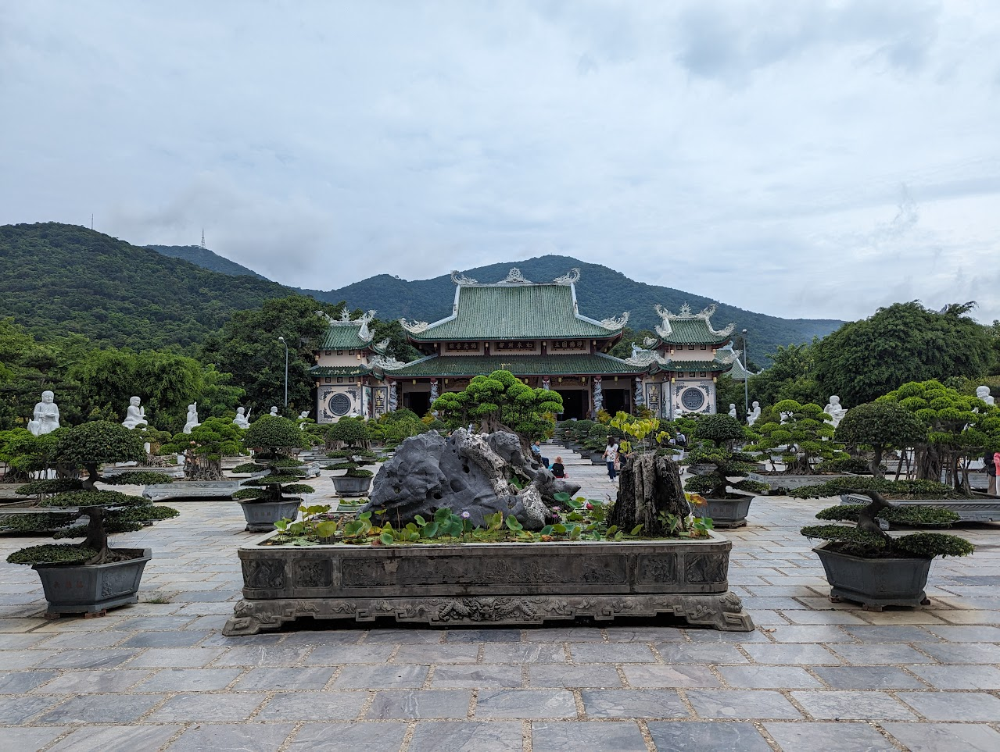
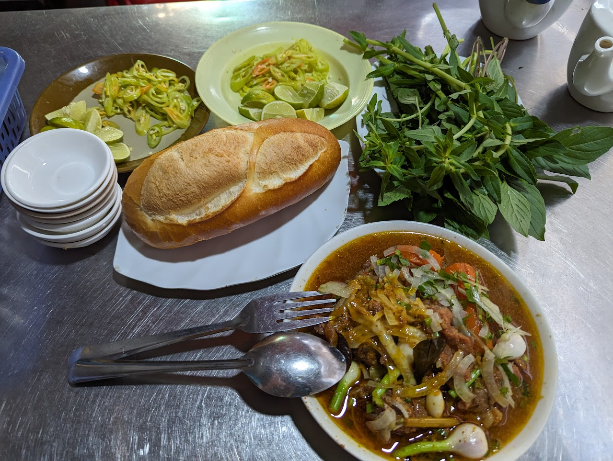
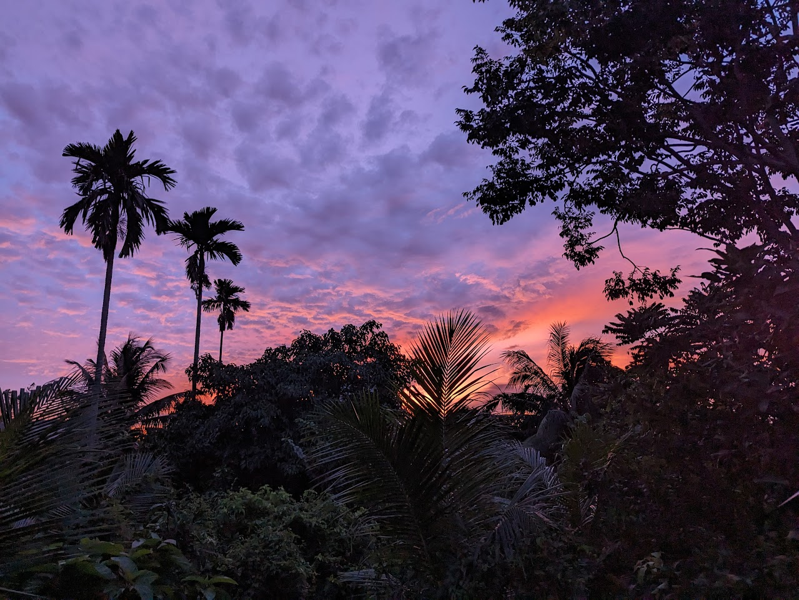

Colin Huber, Geomatics Engineer
School of Learning: udacity.com
Bio: Hi there! I am Colin Huber and am a Geomatics Engineer with
experience in Front End Web Development. I specialize in embedded GNSS
systems software and system testing for 15+ years, and have a passion
for travelling in SE Asia. I always like to keep learning and helping
anyone out whenever I can!
Vietnam Trip: August-September 2023
This was my fifth trip to Vietnam! This time I went to visit a
friend in Tien Giang province, I got a lovely bouquet of flowers in
Lam Dong, and had an amazing apartment stay in Da Nang!

Yummy beef stew in Saigon
One of the best and most flavorful meals to exist in SE Asia!

Tien Giang Province
A lovely sunset at my friend's house in Tien Giang province!
Beautiful Vietnam Scenery!